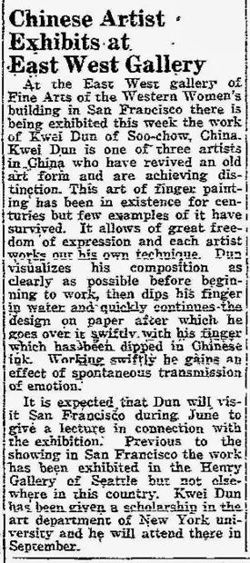

Chinese Artist Exhibits at East West Gallery
访问原网页 ↗Visit original website ↗

S063 · The San Mateo Times and Daily News Leader · 1928-06-26
报道西方妇女大楼内东⻄画廊的指画展及先用水、后用墨的画法。关于到场演讲，原文采用预期语气。The report describes the East West Gallery show and a water-then-ink technique. It anticipates a visit by the artist without confirming his attendance.
馆藏图像与原文Archived images and documents

原始网址Original URL
https://blogger.googleusercontent.com/img/b/R29vZ2xl/AVvXsEj-4mcHYVAoWeZTa9xsNosAFpqfvA0H9sgmcxZbgWq_MffvkBSTQYD9pCFPD4ZiYmfoI5a3QmtEoHA_v-4IVzkBv4bzlxF31DaRN06ovmBmghLbXI4u-drFidDUDJpMrymuUDAeXYsy4pZM/s1600/1928_06_26+Kwei+Dun+San+Mateo+Times+and+Daily+News+Leader+(CA).jpg